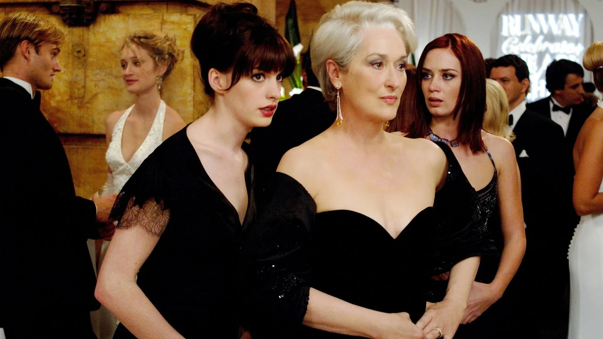
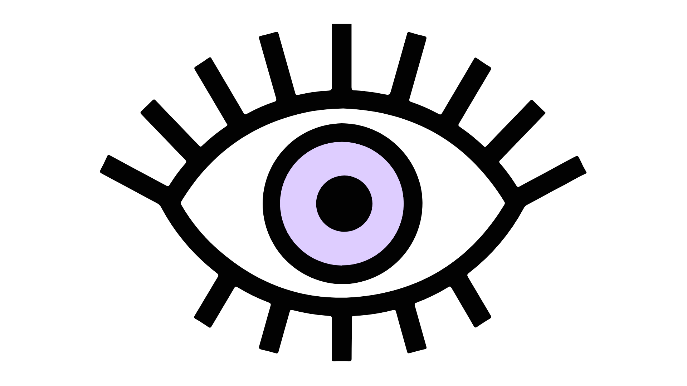
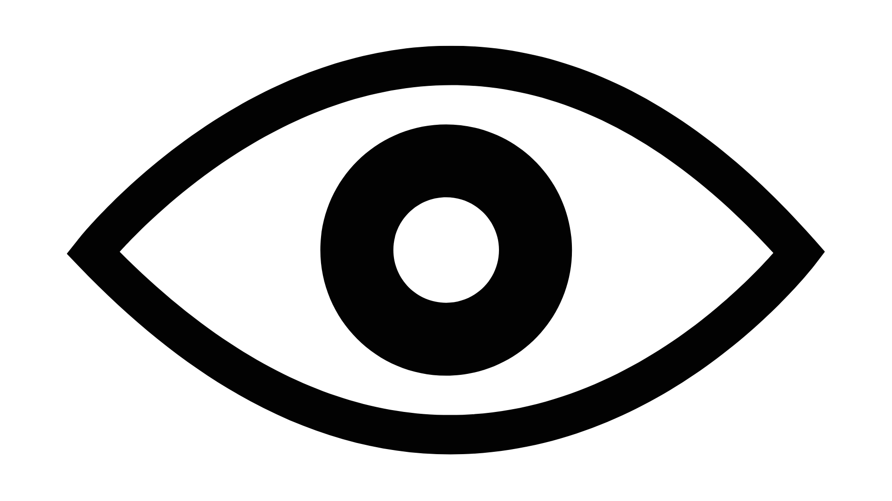
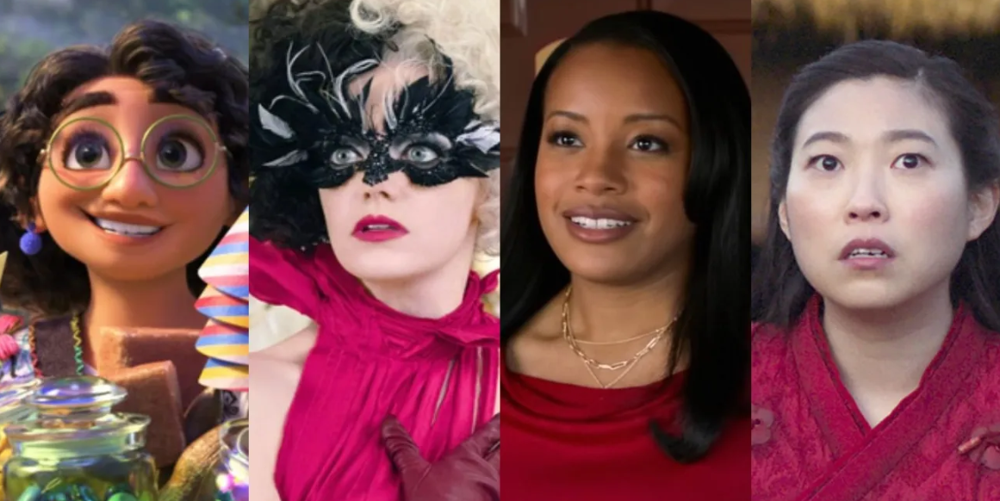

Introducción
El proyecto Deconstruyendo Miradas aborda la desigualdad estructural de género en el ecosistema audiovisual del Estado de México, una problemática crítica donde el 78.7% de las mujeres han experimentado algún tipo de violencia, la prevalencia más alta del país, mientras que en la industria audiovisual solo el 37% del personal es femenino y únicamente el 26% de los largometrajes son dirigidos por mujeres, pese a que más del 50% de egresadas de carreras audiovisuales son mujeres.
El proyecto busca transformar esta realidad mediante un modelo híbrido que combina alianzas institucionales con infraestructura digital, implementándose durante 18 meses en seis municipios prioritarios del Estado de México. El propósito principal es visibilizar el talento de mujeres creadoras audiovisuales, producir contenidos que desafíen estereotipos de género, capacitar profesionales y audiencias en perspectiva de género, y construir una red colaborativa que fortalezca el desarrollo profesional de las mujeres en el sector.
La ejecución se realizará mediante alianzas estratégicas con instituciones educativas, culturales (casas de cultura, cinetecas) y gubernamentales, contando con un equipo multidisciplinario. La importancia de este proyecto radica en su potencial para contribuir a la reducción de la violencia simbólica que refuerza la desigualdad de género en una entidad donde 17 millones de habitantes consumen diariamente 5.3 horas de contenidos audiovisuales, impactando directamente a 1,500–2,000 beneficiarios y alcanzando a 10,000 personas a través de plataformas digitales y redes sociales.
Objetivo General

The Devil Wears Prada (2006)
Promover una representación equitativa, realista, diversa y libre de violencia de las mujeres en el medio audiovisual del Estado de México durante el periodo 2026–2028, mediante la visibilización y reconocimiento de al menos 15 creadoras audiovisuales y 5 estudios independientes a través de perfiles profesionales, plataforma digital y exposición; la producción y difusión de 8 contenidos audiovisuales (4 cortometrajes de 10– 15 min, 4 cápsulas de 3–5 min) con perspectiva de género exhibidos en 3 plataformas y 6 proyecciones públicas; la generación de 6 espacios de reflexión y formación que capaciten a 150 personas en análisis crítico de contenidos; y la conformación de una red colaborativa de 30 creadoras con 5 alianzas institucionales estratégicas; contribuyendo así a la reducción de estereotipos, objetificación y desigualdad estructural en el sector audiovisual mexiquense, alcanzando un impacto directo en 1,500-2,000 beneficiarios y un alcance mediático de 10,000 personas.

Datos Clave del Proyecto
- 18 meses de ejecución (2026–2028)
- $748,000 MXN presupuesto total del proyecto
- 10,000 personas alcanzadas vía medios digitales y proyecciones
- 8 piezas audiovisuales producidas (4 cortometrajes + 4 cápsulas)
- 15 creadoras audiovisuales visibilizadas
- 6 municipios prioritarios del Estado de México

El Problema: Una Industria Desigual
El Estado de México concentra la tasa más alta de violencia contra mujeres en todo el país, con un 78.7% de prevalencia según la ENDIREH 2022. Esta violencia no se expresa únicamente en ámbitos domésticos o públicos: también opera de manera simbólica en los medios audiovisuales, que reproducen estereotipos de género que invisibilizan, objetifican y marginan a las mujeres como sujetas creadoras. La paradoja estructural es clara: las mujeres representan más del 50% de las egresadas de carreras audiovisuales en el país, pero solo ocupan el 37% de los puestos en la industria, y únicamente el 26% de los largometrajes producidos en México son dirigidos por mujeres. Esta brecha entre formación y ejercicio profesional es una forma concreta de discriminación estructural que este proyecto busca atacar.

De izquierda a derecha: 'Encanto', 'Cruella', 'A Journal for Jordan' y 'Shang-Chi', Disney.
Cierre: La Pantalla Puede Cambiar el Mundo
Deconstruyendo Miradas es más que un proyecto audiovisual: es una apuesta por transformar la forma en que la sociedad mexiquense se ve a sí misma a través de las historias que cuenta. Cada imagen, cada perfil, cada taller es un paso hacia una industria más justa y representativa.
La desigualdad estructural en el sector audiovisual no se resuelve sola. Requiere proyectos como este: intencionales, multidimensionales, anclados en el territorio y sostenidos por redes de colaboración. Al combinar producción cultural, visibilización, formación y red laboral, Deconstruyendo Miradas ataca el problema desde cuatro frentes simultáneos, generando impacto tanto en la oferta de contenidos como en la demanda crítica de las audiencias.
El legado del proyecto no termina en el Mes 18. La plataforma web permanece activa, los contenidos audiovisuales siguen circulando, la red de 30 creadoras continúa operando y el documento de buenas prácticas queda disponible como herramienta metodológica replicable para otros estados y contextos. Deconstruyendo Miradas no es un evento: es el inicio de un ecosistema.
"Las mujeres están detrás de las cámaras. Ya es hora de que también estén dignamente frente a ellas."